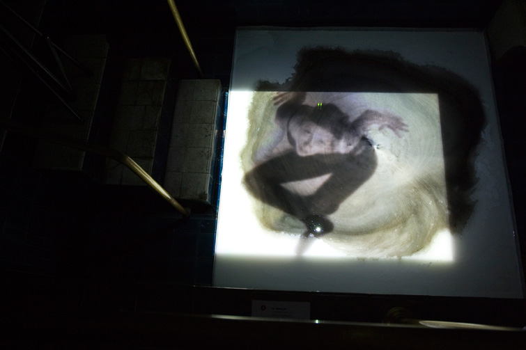
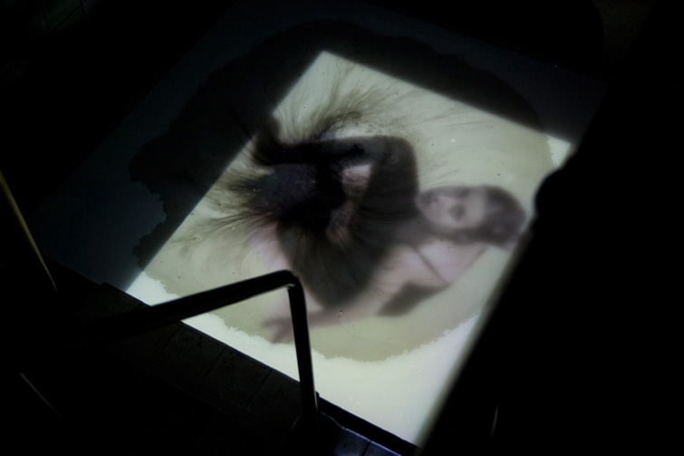
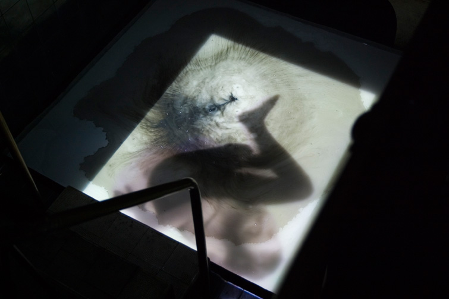
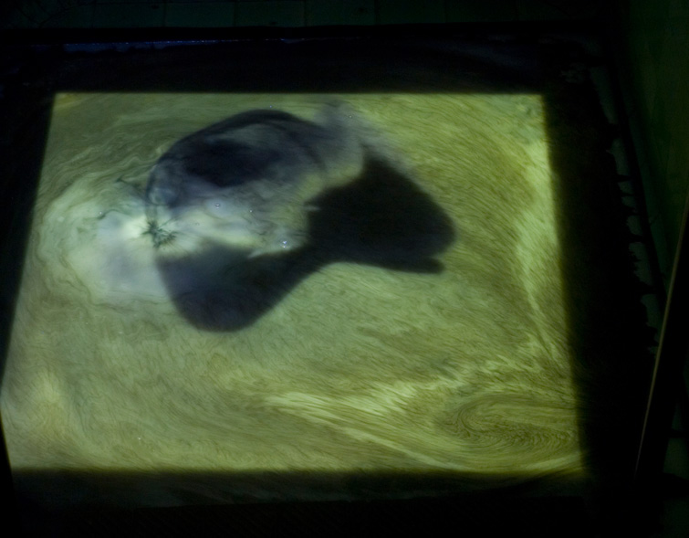
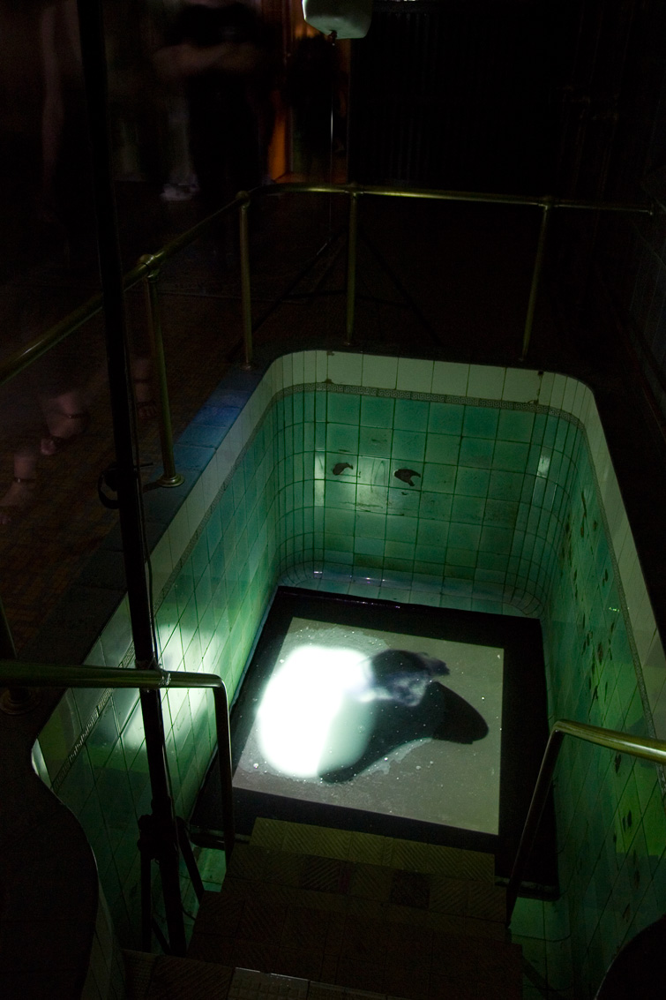

PRZETRWANIE






Instalacja site-specific w ramach festiwalu SURVIVAL 5, polegajaca na konfrontacji dwoch projekcji video, w dwoch znajdujacych sie obok siebie mini basenach. W pierwszym basenie projekcja ukazywana byla na ekranie z bialego plynu do ktorego kapala czarna kropla, w drugim na odwrot. Przez co w efekcie oba plyny - ekrany projekcyjne staly sie szare. Kobieta z projekcji nieustannie uciekala, unikala realnie kapijacej kropli.
Osrodek SPA, Wroclaw 2007
fot. Epipactis